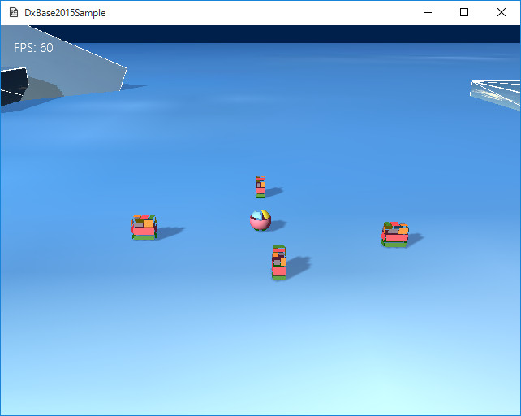

図1011a
この機能は、グループに対してのイベント送出を行って実装しています。
//--------------------------------------------------------------------------------------
// class SeekObjectGroup : public GameObjectGroup;
// 用途: 追いかけるオブジェクトのグループ
//--------------------------------------------------------------------------------------
class SeekObjectGroup : public GameObjectGroup{
public:
SeekObjectGroup();
virtual ~SeekObjectGroup();
//イベントの取得
void OnEvent(const shared_ptr<Event>& event)override;
};
//イベントの取得
void SeekObjectGroup::OnEvent(const shared_ptr<Event>& event){
for (auto& Ptr : GetGroupVector()){
if (!Ptr.expired()){
auto ShPtr = dynamic_pointer_cast<SeekObject>(Ptr.lock());
if (ShPtr){
ShPtr->RedColorMotion();
}
}
}
}
//色変更
void SeekObject::RedColorMotion(){
auto PtrDraw = AddComponent<BasicPNTDraw>();
if (m_IsRed){
PtrDraw->SetDiffuse(Color4(0.7f, 0.7f, 0.7f, 1.0f));
m_IsRed = false;
}
else{
PtrDraw->SetDiffuse(Color4(1.0f, 0, 0, 1.0f));
m_IsRed = true;
}
}
//Aボタンでジャンプする瞬間の処理
void Player::JumpMotion(){
auto PtrTrans = GetComponent<Transform>();
//重力
auto PtrGravity = GetComponent<Gravity>();
//ジャンプスタート
Vector3 JumpVec(0.0f, 4.0f, 0);
if (PtrTrans->GetParent()){
//親がいたら、アクションコンポーネントの移動アクションを探す
//移動ボックスに乗っている場合、その慣性をジャンプに加算する
auto ActionPtr = PtrTrans->GetParent()->GetComponent<Action>(false);
if (ActionPtr){
JumpVec += ActionPtr->GetVelocity();
}
}
PtrGravity->StartJump(JumpVec);
//ここで追いかけるオブジェクトにイベントを送る
auto Group = GetStage()->GetSharedObjectGroup<SeekObjectGroup>(L"ObjectGroup");
PostEvent(0, GetThis<Player>(), Group, L"RedEvent");
}
//追いかけるオブジェクトの作成
void GameStage::CreateSeekObject(){
//オブジェクトのグループを作成して設定する
auto Group = Object::CreateObject<SeekObjectGroup>();
SetSharedObjectGroup(L"ObjectGroup", Group);
//配列の初期化
vector<Vector3> Vec = {
{ 0, 0.125f, 10.0f },
{ 10.0f, 0.125f, 0.0f },
{ -10.0f, 0.125f, 0.0f },
{ 0, 0.125f, -10.0f },
};
//配置オブジェクトの作成
for (auto v : Vec){
AddGameObject<SeekObject>(v);
}
}